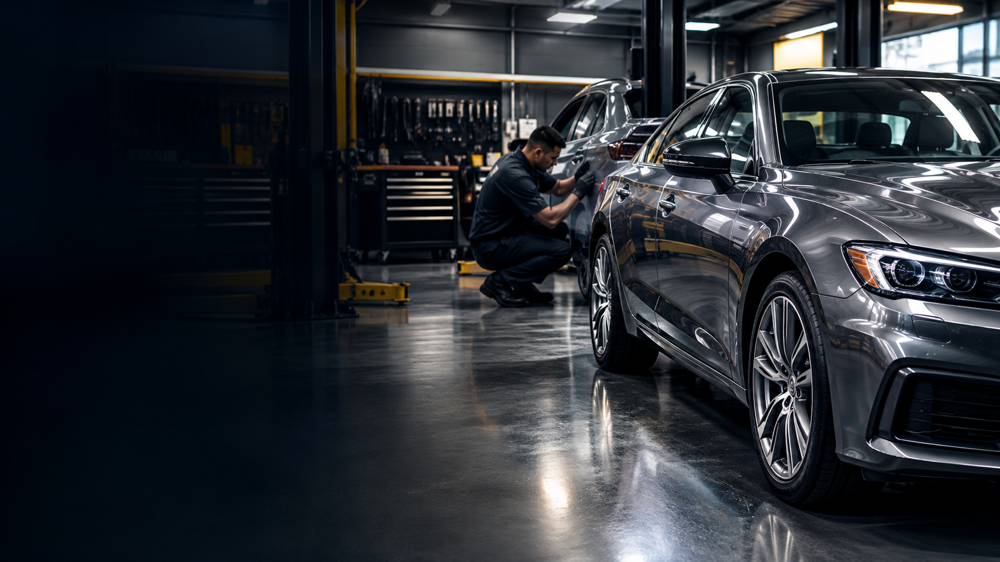
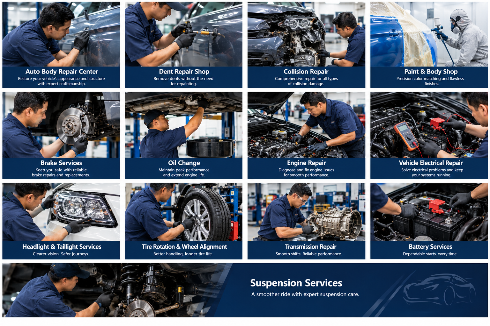

Auto Body Repair Center
Auto body repair services for vehicle damage and restoration.
Collision Repair in Amityville, New York
From dents and collision damage to paint and mechanical services, Shining Star Collision helps drivers get back on the road.
ASE and I-CAR Gold Class technicians · Towing and loaner vehicle support

About Shining Star Collision
Shining Star Collision describes itself as a dealer-preferred collision repair center serving Amityville and nearby communities.
After an accident, the team can assess vehicle damage, order needed parts, and help coordinate the insurance claim. The shop also says it can arrange towing and a loaner vehicle.
Its repair approach focuses on restoring a vehicle to its pre-accident condition. The shop also describes addressing eligible unrelated dents and scratches that were present before the collision.
Shining Star Collision lists ASE and I-CAR Gold Class credentials for its technicians and says its facility is equipped for professional collision repair.
Our Services
Every service named in the collage is listed below, from collision and body work to mechanical services.
Auto body repair services for vehicle damage and restoration.
Dent repair for vehicle body panels.
Collision damage repair, with the goal of restoring the vehicle to its pre-accident condition.
Paint and body services for damaged vehicle panels and finishes.
Brake service and repair.
Oil change service for your vehicle.
Repair service for engine concerns.
Electrical system repair for your vehicle.
Service for vehicle headlights and taillights.
Air conditioning service listed among the shop's mechanical services.
Tire rotation and wheel alignment services.
Repair service for vehicle transmissions.
Battery service for your vehicle.
Service for vehicle suspension systems.
Service Gallery

FAQs
Quick answers based on information published by Shining Star Collision.
The shop lists collision repair, dent repair, paint and body work, and mechanical services including brakes, oil changes, engine, electrical, lighting, air conditioning, tires and alignment, transmission, battery, and suspension service.
Shining Star Collision says it can arrange towing and a loaner vehicle, assess damage, order needed parts, and help manage the insurance claim.
The shop says its goal is to restore a vehicle to its pre-accident condition and describes addressing eligible dents or scratches that were present before the collision.
The shop is at 370 Merrick Road, Amityville, NY 11701. Call (516) 798-2279 for details.
Before and After
Shining Star Collision describes its repair goal as improving a vehicle's condition after an accident. Contact the shop to ask about repair examples and the process for your vehicle.
Visit or Call
Serving Amityville and surrounding areas.
Call the shop to discuss repairs, towing, loaner vehicle support, or service availability.
(516) 798-2279